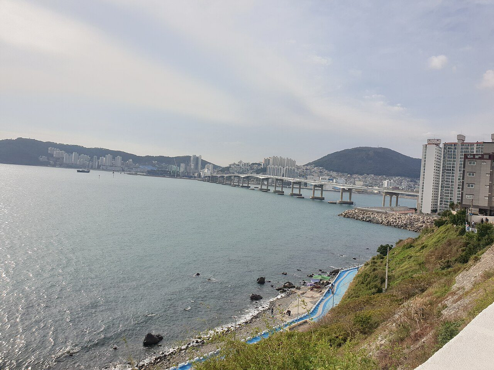
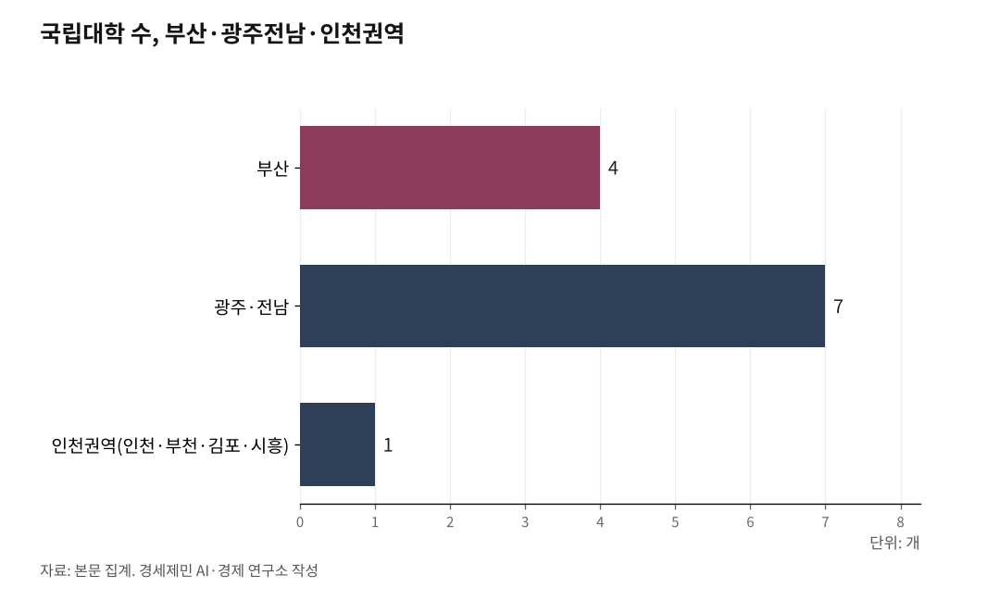

[인천 해양산업, 생존의 기로⑦] 통합 국립해양대 인천캠퍼스 설립 경로
협상·특별법 2가지 경로 동시에 밟아야
2026년 지방선거 전이 마지막 기회
AI경제저널=김갑봉 기자 | 한국해양대와 목포해양대가 2025년 9월 28일 글로컬대학30(지역혁신 중심 대학 육성 사업) 본지정에서 탈락했다. 2025년 5월 예비 지정을 받고 '1국 1해양대' 통합을 공동 추진했지만 최종 관문을 넘지 못했다. 글로컬대학30 사업 자체도 2025년을 마지막으로 신규 지정이 종료됐다(해사신문, 2025.9.28.).

그래도 두 대학은 멈추지 않는다. 한국해운협회는 탈락 직후 100억원 지원 약속을 재확인했다(해양통신, 2025.10.2.). 부산시 100억원, 전남도 243억원 대응 예산도 있다. 독자 재원으로 2027년 통합 완료를 추진한다. 지금 구상은 부산 본교와 목포 특화캠퍼스의 2캠퍼스 체제다.
서해가 빠져 있다. 이 구도가 굳어지기 전에 인천이 들어가야 한다. 경로는 두 가지다.
글로컬대학 탈락, 오히려 기회다
탈락의 원인 중 하나는 구상의 완결성이다. 부산·목포 2캠퍼스로는 국가 해양교육 전략으로서 설득력이 약하다. 한반도는 동해·서남해·서해 3면이 모두 전략 해역인 반도 국가다. 2캠퍼스로는 서해를 포괄할 수 없다.
인천캠퍼스를 더하면 동해 부산·서남해 목포·환황해 인천의 3캠퍼스 3해역 체제가 완성된다. 이것이 진짜 '1국 1해양대'다. 두 대학이 글로컬 재도전을 준비한다면 3캠퍼스 체제로 완성한 구상이 훨씬 강하다. 탈락이 인천 진입의 기회다.
한국해양대의 모태는 1919년 인천에 설립한 조선총독부 체신국 해원양성소다(한국민족문화대백과). 1947년 인천해양대학과 병합한 뒤 군산을 거쳐 1953년 부산으로 이전했다. 107년 만의 귀환이다.

경로 1: 통합 협상 테이블에 인천을 끼워 넣는다
2025년 7월 25일 부산 벡스코에서 열린 통합 비전 보고회에 박형준 부산시장과 김영록 전남지사가 참석했다. 인천은 없었다. 부산·목포 2캠퍼스 구도가 양 대학, 두 광역단체장, 해운협회 사이에서 합의되고 있다.
인천시장이 지금 당장 두 대학 총장과 해수부·교육부를 찾아가야 한다. 패키지 딜 구조는 명확하다. 남부권은 본교 주도권과 재정 집중을 갖는다. 인천은 3번째 캠퍼스 자리와 환황해 특화 기능을 요구한다. 부산·목포도 환황해 교육 부담을 덜고 각자 해역에 집중할 수 있다. 누가 손해 보는 구조가 아니다.
인천에는 협상 근거가 충분하다. 인천항은 2024년 컨테이너 355만8455TEU(20피트 길이 컨테이너 1대 기준)를 처리한 국내 2위 항만이다. 대중국 수출 66%, 수입 56%를 담당한다. 해양경찰청 본청이 송도에 있다. 해사국제상사법원도 2028년 인천 개원이 확정됐다. 6.2GW 해상풍력 O&M(Operation & Maintenance, 운영정비) 인력 수요가 413~7000명에 달한다. 이 인력을 키울 캠퍼스가 인천에 없다.
인천시의회는 2026년 2월 12일 제306회 임시회에서 인천지방해양수산청과 인천항만공사 관리·감독권의 단계적 이관을 촉구하는 결의안을 채택했다. 결의안을 협상 카드로 들고 테이블에 앉아야 한다.
경로 2: 특별법으로 법정 캠퍼스를 명시한다
협상만으로는 불충분하다. 법적 근거가 있어야 예산이 따라온다.
수도권정비계획법은 4년제 대학 신설을 수도권에서 금지한다. 대학을 인구집중 유발 시설로 분류하기 때문이다. 이 장벽을 뚫으려면 특별법이 필요하다. '국가 해양인재양성 특별법'에 통합 국립해양대 인천캠퍼스를 법정 캠퍼스로 명시하고 수도권정비계획법 예외 조항을 담는 방식이다.
평택이 선례다. 이병진 의원(경기 평택을)은 2025년 7월 15일 국회도서관 소회의실에서 '국립해양해사대학교 평택 설립 필요성과 추진방안' 토론회를 열었다(중부일보, 2025.7.15.). 수도권 해양인재 양성의 필요성을 공론화했다. 최부홍 목포해양대 교수는 이 자리에서 "글로벌 해양강국 도약을 위해 '1국 1국립해양대 3캠퍼스 체제(부산·목포·평택)'가 필수"라고 주장했다. 의원 1명이 국회 토론회를 열고 수도권 해양대 신설 논의를 끌어냈다.
민주당 인천 국회의원은 11명이다. 노종면(부평갑), 박선원(부평을), 유동수(계양갑), 김교흥(서구갑), 이용우(서구을), 모경종(서구병), 맹성규(남동갑), 이훈기(남동을), 박찬대(연수갑), 정일영(연수을), 허종식(동구미추홀구갑). 이들이 공동 발의하면 평택 의원 1명과는 차원이 다른 추진력이 생긴다.
이재명 정부의 5극3특(5대 광역경제권·3대 특별자치) 균형발전 정책도 근거가 된다. 동해·서남해에만 해양대가 있고 환황해 관문항 인천에는 없다. 이것이 5극3특과 어떻게 정합하는지 정부 스스로 답해야 한다.
평택은 의원 1명이 움직였다, 인천은 13명이 침묵한다
평택을 추진하던 이병진 의원은 2026년 1월 8일 대법원 상고 기각으로 의원직을 상실했다. 특별법 발의 주체가 사라졌다. 평택의 동력이 급격히 약해졌다.
반면 인천 국회의원은 현재 13명이다. 해사법원, 해양경찰청 본청, UNCITRAL(United Nations Commission on International Trade Law, 유엔국제상거래법위원회) 아태지역센터가 이미 인천에 있다. 국가 해양인재 양성의 명분과 인프라가 평택과 비교가 안 된다.
그런데 아직 법안 한 건도 없다. 재외동포청 이전 소식에는 하루 만에 기자회견을 열던 의원들이 해양대 설립에는 2년째 침묵이다.
인천시가 먼저 움직여야 한다
두 경로 모두 인천시가 선제적으로 나서지 않으면 작동하지 않는다.
인천시가 지금 당장 할 수 있는 일이 있다. 인천캠퍼스 설립 타당성 연구 용역 발주다. 협상 테이블에 앉으려면 자료가 있어야 한다. 어떤 학과를, 얼마 규모로, 어디에 세울지 구체안 없이는 협상 상대가 되지 못한다. 인천시가 900억원 규모의 해양산학융합센터 용역을 발주했다. 이 용역 결과를 두 경로의 근거 자료로 활용할 수 있다.
국립대 지역 균형도 논거가 된다. 부산에 국립대가 4개(부산대·부경대·한국해양대·부산교대), 광주·전남에 7개가 있다. 인천권역(인천·부천·김포·시흥)에는 인천대 1개뿐이다. 2013년에야 국립으로 전환했다. 이 불균형을 정면으로 제기해야 한다.
2026년 6월 3일 전국동시지방선거를 실시한다. 인천시장 선거도 치른다. 통합 국립해양대 인천캠퍼스 설립을 차기 인천시장 핵심 공약으로 내세워야 한다. 부산-목포 2축 구도가 완성되면 인천은 영구히 제외된다. 동해 부산·서남해 목포·환황해 인천. 3캠퍼스 3해역 체제가 완성돼야 이재명 정부의 5극3특이 해양 분야에서 실현된다.
참고문헌
·"한국해양대·목포해양대 글로컬대학 본지정 탈락", 해사신문, 2025.9.28. http://www.haesanews.com/news/articleView.html?idxno=142078
·"글로컬 탈락에도 해운협회 한국해양대·목포해양대에 100억 지원키로", 해양통신, 2025.10.2. https://www.oceanpress.co.kr/news/article.html?no=27829
·"통합 국립해양대, 대한민국 해양 100년 '미래의 닻' 올려", 한국대학신문, 2025.8.29. https://news.unn.net/news/articleView.html?idxno=583101
·"이병진, '국립해양대 평택캠퍼스' 설립 국회 토론회 성료", 중부일보, 2025.7.15. https://www.joongboo.com/news/articleView.html...
·"한국해양대학교", 한국민족문화대백과사전. https://encykorea.aks.ac.kr/
·"국회 본회의 해사법원 설치 확정, 2028년 3월 개원 목표", 인천투데이, 2026.2.12. https://www.incheontoday.com/news/articleView.html
·"인천시의회, 인천해수청·IPA 권한 이관 촉구 결의대회", 내외일보, 2026.2.12. https://www.naewoeilbo.com/news/articleView.html
·"2024년 인천항 컨테이너 물동량", 인천항만공사 보도자료, 2025.1.2.
사진 출처
· [대표사진] Choi2451, "Namhang Bridg taken from Yeongdo.jpg", 위키미디어 공용, CC0, https://commons.wikimedia.org/wiki/File:Namhang_Bridg_taken_from_Yeongdo.jpg
※ 이 기사는 인공지능을 활용해 작성했습니다.
관련기사
- 인하대 해양전문대학원, 지금 만들면 된다
- [인천해양산업, 생존기로⑪] 10조달러 경제권 관문, 전략도 기관도 없다
- [인천해양산업, 생존기로⑫] 남북교류 재개되면, 인천은 준비돼 있나
- [인천해양산업, 생존기로⑫-하] 남북철도 미지수, 중국 항만을 활용하라
저작권자 © AI경제저널 무단전재 및 재배포, AI학습 및 활용 금지